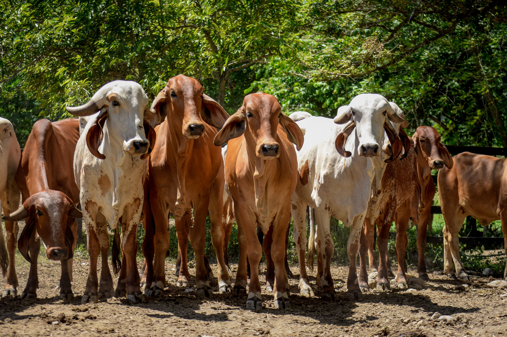
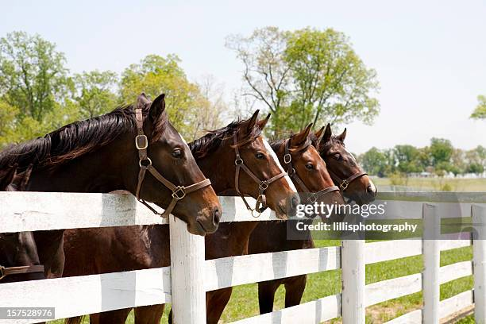
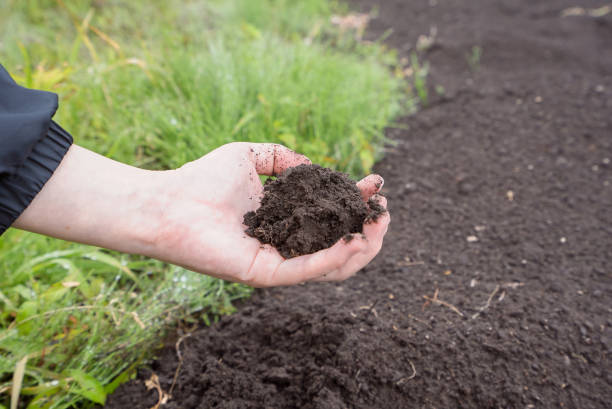
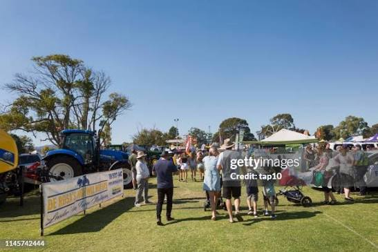

Serviços

Bovinos
Consultoria técnica em manejo reprodutivo, nutricional e sanitário para otimizar a produtividade do rebanho.
- ✔ Planejamento Forrageiro
- ✔ Controle Reprodutivo e Sanitário

Equinos
Orientação focada no bem-estar, reprodução e nutrição de equinos, incluindo cuidados com potros recém-nascidos.
- ✔ Avaliação Nutricional
- ✔ Manejo de Instalações

Suínos e Caprinos
Acompanhamento de produção, controle de rebanho e adequação de instalações para garantir rendimento e sanidade.
- ✔ Gestão do Rebanho
- ✔ Adequação de Espaços

Consultoria de Solos
Análises detalhadas e gestão estratégica de solos para garantir a máxima sustentabilidade e rentabilidade.
- ✔ Coleta e Análise Técnica
- ✔ Correção e Adubação

Participação em Eventos
Representação, organização e palestras em feiras e eventos focados na área de Zootecnia e no agronegócio.
- ✔ Organização de Feiras
- ✔ Palestras Técnicas
 Chamar no WhatsApp
Chamar no WhatsApp